Les Origines — Le Tiger des Années 1930
Quand Triumph créait déjà ses machines les plus sportives
Le nom Tiger apparaît pour la première fois dans le catalogue Triumph
en 1936. À cette époque, le monde de la moto est encore dominé par les
monocylindres robustes et les bicylindres naissants. Le Tiger désigne alors les versions
les plus performantes et les mieux préparées de la gamme Triumph — des machines soigneusement
montées à la main, testées individuellement sur piste avant leur livraison, et garanties
capables d'atteindre des vitesses que les modèles de série ne peuvent pas prétendre égaler.
Le Tiger 70, le Tiger 80 et le Tiger 90
— leurs noms indiquent directement leur vitesse de pointe garantie en miles per hour,
soit respectivement 113, 129 et 145 km/h. À une époque où peu de motos dépassaient
les 100 km/h, ces machines sont des bombes. Chaque Tiger est assemblé par un mécanicien
désigné qui signe littéralement son travail — un niveau d'attention et de personnalisation
extraordinaire pour une production industrielle.
Ces premiers Tigers ne sont pas des trails ou des adventure bikes au sens moderne du terme.
Ce sont des sportives légères, taillées pour la performance et la réactivité. Mais ils
portent déjà en eux le germe de ce qui deviendra la philosophie Tiger : être la version
la plus capable, la plus polyvalente, la plus ambitieuse de la gamme Triumph.
Après la guerre, le Tiger continue d'évoluer. Le Tiger 100 — capable de
100 mph soit 161 km/h — devient une référence absolue dans les années
1950 et 1960, une machine de compétition à peine homologuée pour la route, adorée des
pilotes du dimanche et des vrais coureurs à la fois.
1993 — Le Tiger Moderne : La Renaissance du Baroudeur
Hinckley réinvente le concept pour une nouvelle ère
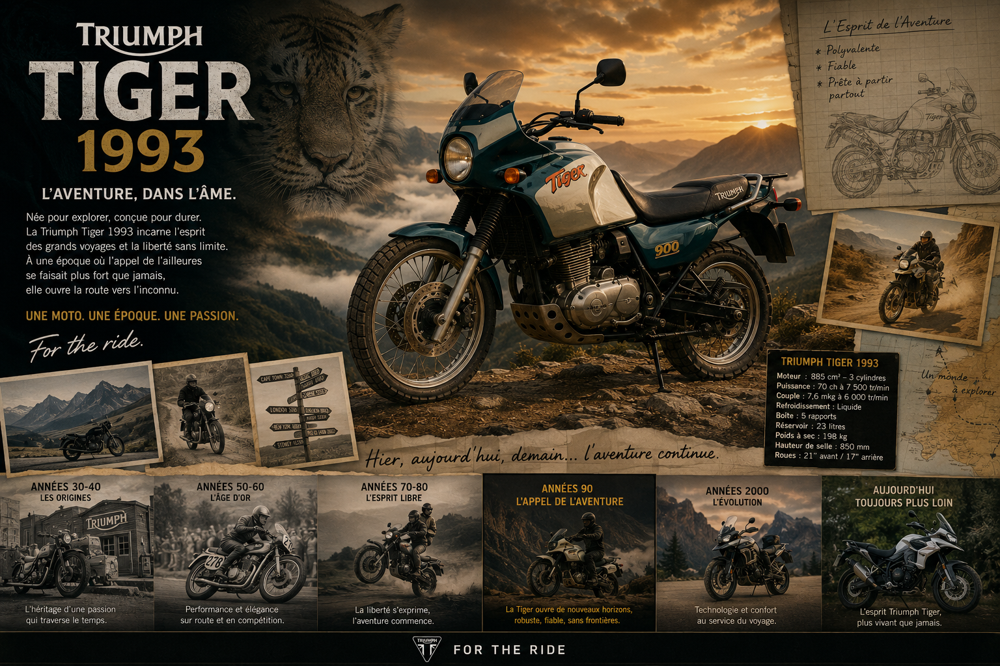
En 1993, la nouvelle Triumph de John Bloor relance le nom Tiger dans
une direction radicalement différente. Plutôt que de continuer sur la voie de la sportive
performante, Hinckley choisit de transformer le Tiger en trail routier —
une moto polyvalente, capable sur route comme en dehors, conçue pour l'aventure au long
cours.
Ce choix est visionnaire. En 1993, le segment adventure est encore embryonnaire. La BMW
GS, pionnière du genre depuis 1980, est pratiquement seule sur ce créneau. Triumph voit
une opportunité et s'y engouffre avec le Tiger.
Le moteur est le trois cylindres de 885 cm³ caractéristique des nouvelles
Triumph de Hinckley, développant 85 chevaux. Ce choix architectural
est déjà une différenciation forte par rapport à la BMW bicylindre — le trois cylindres
offre une sonorité et un couple spécifiques, immédiatement reconnaissables. La position
de conduite est haute et droite, les suspensions ont un débattement généreux, le guidon
large offre un excellent levier pour manœuvrer hors des sentiers battus.
Le Tiger 1993 est une moto sérieuse, robuste, honnête. Elle n'est pas spectaculaire sur
le papier, mais elle se révèle sur le long terme : fiable, confortable, capable d'encaisser
des milliers de kilomètres chargée de bagages sans se plaindre. Les premiers propriétaires
l'emmènent en voyages lointains et en reviennent convaincus. Le bouche-à-oreille est
excellent. Le Tiger commence à construire sa réputation de baroudeur de confiance.
1999 — Le Tiger 955i : La Confirmation
Plus de cylindrée, plus de caractère, même aventure
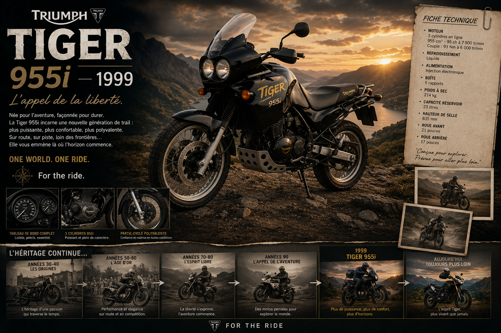
En 1999, le Tiger évolue significativement avec l'adoption du nouveau
moteur trois cylindres de 955 cm³ à injection électronique — le même
bloc qui équipe la Daytona T595 et la Speed Triple T509 lancées en 1997. Le Tiger profite
ainsi directement des investissements techniques réalisés pour les sportives de la gamme.
Ce moteur de 104 chevaux change profondément la personnalité du Tiger.
Il est plus puissant, plus souple, plus généreux dans les reprises. Sur autoroute, il
avale les kilomètres avec une aisance et une réserve de puissance que le 885 ne pouvait
pas offrir. Dans les cols de montagne, son couple disponible dès les bas régimes permet
de négocier les lacets chargé de bagages sans jamais être à court de puissance.
Le design évolue lui aussi. Le Tiger 955i adopte une ligne plus musclée, plus moderne,
avec un bec avant proéminent qui deviendra progressivement une signature visuelle du modèle.
La bulle de protection est plus grande. Les sacoches latérales en option sont mieux
intégrées à la ligne générale. Le Tiger prend des airs d'aventurier aguerri.
La réputation du Tiger comme machine de voyage longue distance se consolide pendant
ces années. Des propriétaires l'emmènent en Afrique, en Asie Centrale, en Amérique du
Sud. Les récits de voyage reviennent systématiquement avec le même verdict : le Tiger
est fiable, confortable sur la durée, et capable de s'adapter à des conditions que
beaucoup de machines refuseraient de traverser.
2007 — Le Tiger 1050 : L'Âge de la Maturité
Une machine taillée pour le monde entier
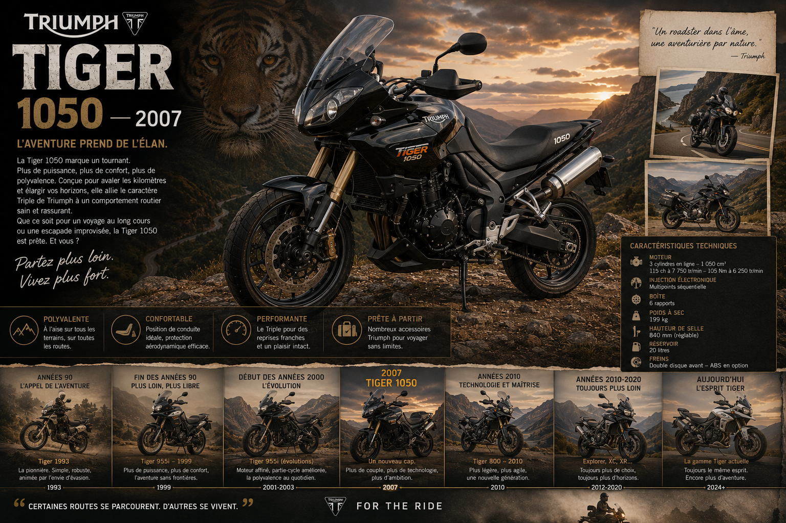
En 2007, Triumph lance le Tiger 1050 et marque une
étape décisive dans l'histoire du modèle. Ce n'est plus simplement une évolution —
c'est une machine entièrement repensée, plus ambitieuse, plus sophistiquée, clairement
positionnée pour concurrencer les meilleures trails du marché.
Le moteur est le trois cylindres de 1 050 cm³ issu de la Speed Triple,
reconfiguré pour le Tiger avec une cartographie favorisant le couple à bas et mi-régime.
Il développe 115 chevaux — une puissance généreuse qui donne au Tiger
des performances autoroutières excellentes sans jamais l'alourdir dans le comportement.
Le couple de 105 Nm disponible dès 6 250 tr/min est
particulièrement appréciable en conduite chargée sur route sinueuse.
Le châssis est entièrement nouveau : un cadre périmétrique en aluminium, rigide et léger,
qui donne au Tiger 1050 un comportement routier d'une précision inattendue pour une
machine de cette catégorie. Avec ses 215 kg à plein, il est l'un des
plus légers de sa segment. Cette légèreté se traduit directement en agilité, en facilité
de manœuvre à basse vitesse, en plaisir de conduite sur les routes sinueuses.
L'équipement progresse considérablement. L'ABS est disponible en option. Les valises
latérales en aluminium sont proposées dans le catalogue. La selle est réglable en hauteur.
La bulle est ajustable sans outil. Le Tiger 1050 est une machine pensée pour l'utilisation
réelle — pour les gens qui voyagent vraiment, qui chargent vraiment, qui roulent
vraiment dans toutes les conditions.
La presse spécialisée lui réserve un accueil excellent. Le Tiger 1050 est unanimement
salué comme l'une des meilleures trails de sa génération — agile comme une routière,
capable comme un vrai trail, confortable comme un grand tourisme. Il remporte plusieurs
prix prestigieux et s'impose durablement dans les comparatifs de sa catégorie.
2010 — Le Tiger 800 : La Démocratisation de l'Aventure
Accessible, polyvalent, irrésistible
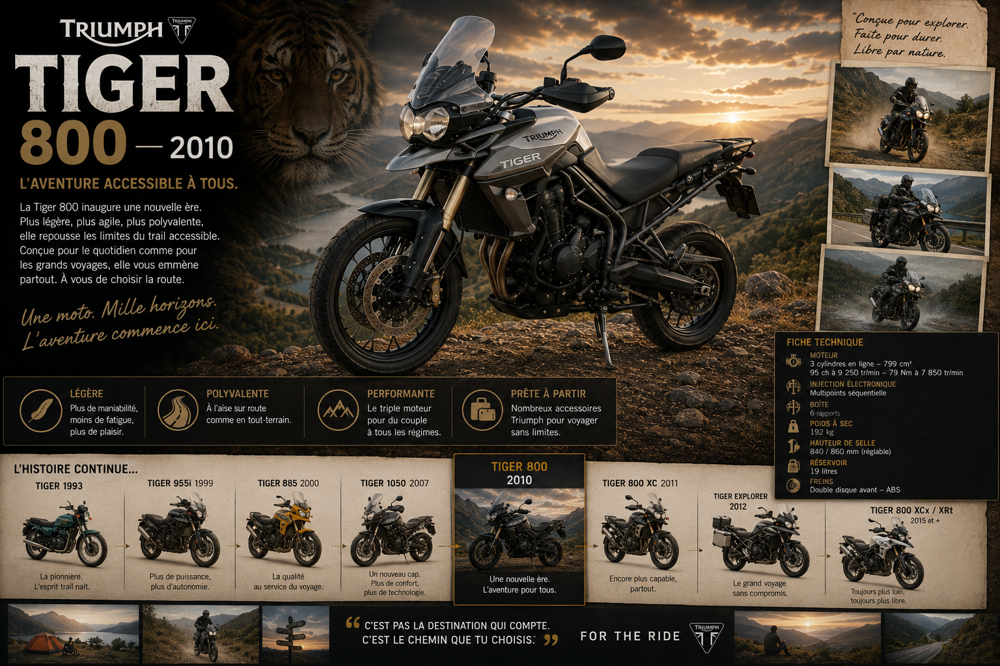
En 2010, Triumph opère un mouvement stratégique majeur en lançant le
Tiger 800. L'idée est simple et brillante : proposer un Tiger plus
accessible, plus léger, plus maniable, mais avec le même ADN aventurier que le 1050.
Une Tiger pour ceux que le 1050 intimide, ou pour ceux qui veulent simplement une moto
moins imposante dans leur quotidien.
Le moteur est un tout nouveau trois cylindres de 800 cm³, développé
spécifiquement pour ce modèle. Il produit 94 chevaux et un couple
généreux de 79 Nm. Ce moteur est immédiatement salué par la presse
comme l'un des plus agréables et des plus caractériels de sa catégorie. Il a la souplesse
d'un bicylindre, la montée en régime d'un quatre cylindres, et la sonorité unique du
trois cylindres Triumph. En pratique, il est enthousiasmant à tous les régimes et dans
toutes les situations.
Le Tiger 800 pèse 189 kg à plein — un poids remarquablement contenu
pour une trail de cette cylindrée. Cette légèreté le rend accessible aux pilotes de
gabarit modeste et facilite considérablement les manœuvres à basse vitesse sur terrain
difficile. C'est un argument décisif pour une moto d'aventure.
Deux versions sont proposées dès le lancement : le Tiger 800 orienté
route, et le Tiger 800 XC (Cross Country) avec des suspensions
à plus grand débattement, des pneus à crampons mixtes, et des protections supplémentaires
pour une utilisation hors des sentiers. Cette approche en deux variantes — route et
aventure — deviendra la structure de toute la gamme Tiger dans les années suivantes.
Le succès commercial est immédiat et fulgurant. Le Tiger 800 s'impose en quelques mois
comme l'une des trails les plus vendues d'Europe. Il attire de nouveaux clients vers
Triumph — des pilotes qui n'auraient pas forcément choisi la marque pour une sportive
ou une Bonneville, mais qui trouvent dans le Tiger 800 exactement ce qu'ils cherchent :
une moto polyvalente, plaisante, fiable et raisonnablement abordable.
2012 — Le Tiger Explorer 1200 : Le Grand Voyageur
Quand Triumph s'attaque au sommet du marché
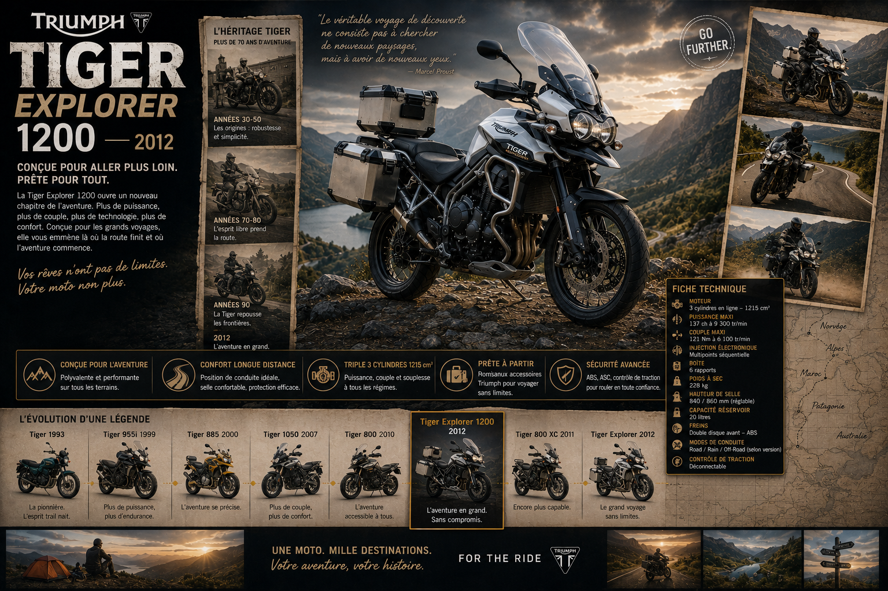
En 2012, Triumph frappe un coup décisif en lançant le
Tiger Explorer 1200 — sa première machine directement positionnée pour
défier la BMW R 1200 GS, reine incontestée du segment grand tourisme-aventure depuis
des années. C'est un pari ambitieux, courageux, et il va se révéler gagnant.
Le moteur est un tout nouveau trois cylindres de 1 215 cm³, le plus
gros jamais monté sur un Tiger. Il développe 137 chevaux et un couple
colossal de 122 Nm. Ces chiffres, associés à une plage de puissance
extraordinairement large, font du Tiger Explorer une machine capable d'avaler les
kilomètres d'autoroute à grande vitesse tout en conservant des ressources suffisantes
pour les pistes et les chemins de terre.
L'équipement est à la hauteur des ambitions du modèle. Le contrôle de traction
est de série, avec deux niveaux d'intervention. L'ABS est intégré avec
un mode spécifique tout-terrain qui désactive l'ABS sur la roue arrière pour permettre
des freinages glissants contrôlés sur sol meuble. Les suspensions semi-actives
sont disponibles en option — une technologie alors réservée aux machines haut de gamme.
Le confort est une priorité absolue. La selle est large et bien rembourrée, réglable
sur deux positions. La bulle offre une protection excellente contre le vent. Les
poignées chauffantes sont de série. Le tableau de bord numérique est complet et lisible.
Les valises latérales en aluminium de 30 litres chacune s'intègrent parfaitement à
la ligne. Le Tiger Explorer est une machine pensée pour les grands voyages — ceux qui
durent des semaines, traversent des continents, affrontent tous les temps.
La presse est impressionnée. Le Tiger Explorer est unanimement salué comme un concurrent
sérieux à la GS allemande — une position que très peu de constructeurs ont réussi à
atteindre. Il remporte le prix de "Meilleure Trail" dans plusieurs
comparatifs européens dès sa première année. Triumph a réussi son pari.
2015 — Tiger 800 XR et XCx : La Gamme se Structure
Route ou tout-terrain ? Les deux, et à la perfection
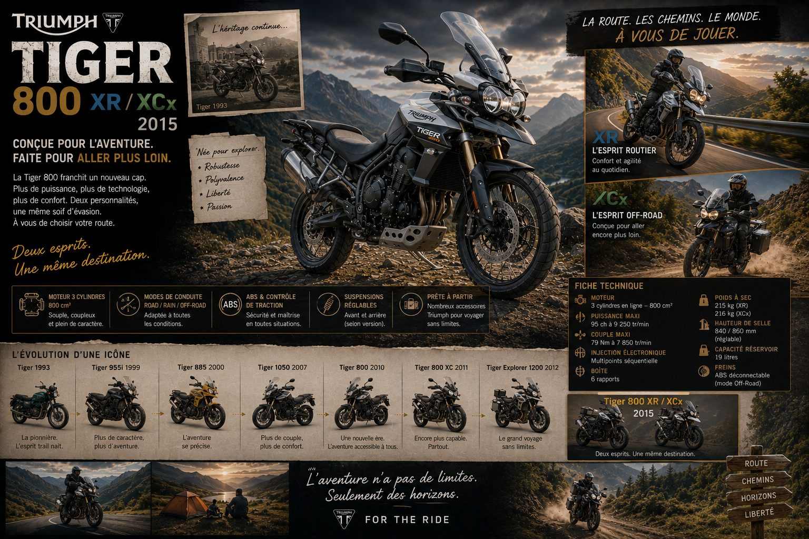
En 2015, Triumph restructure entièrement la gamme Tiger 800 avec une
logique plus claire et plus ambitieuse. La division entre versions route et versions
tout-terrain s'affirme avec deux familles distinctes.
La famille XR (Cross Road) regroupe les versions orientées
route : le Tiger 800 XR de base et le XRx avec
équipement enrichi. Ces versions ont des suspensions routières à course plus courte,
une garde au sol modérée, et des pneus taillés pour le bitume. Elles privilégient
l'agilité et le confort sur les routes goudronnées.
La famille XC (Cross Country) regroupe les versions aventure :
le Tiger 800 XC et le XCx haut de gamme. Suspensions
à grand débattement (220 mm avant, 215 mm arrière),
jante avant de 21 pouces pour un meilleur franchissement des obstacles,
pneus mixtes, protections renforcées, sabot moteur en acier. Ces machines peuvent
s'aventurer sérieusement hors des sentiers battus.
Le moteur 800 reçoit des mises à jour importantes : nouvelle cartographie d'injection,
système ride-by-wire, et surtout l'arrivée de plusieurs modes de conduite — Road, Off-Road,
Sport, Rain — qui modifient le comportement de la machine en fonction du terrain. C'est
une avancée technologique majeure qui place le Tiger 800 2015 dans une autre dimension
par rapport à ses prédécesseurs.
2018 — Tiger 800 : La Perfection Atteinte
Euro 4, nouvelles suspensions, nouvelle électronique
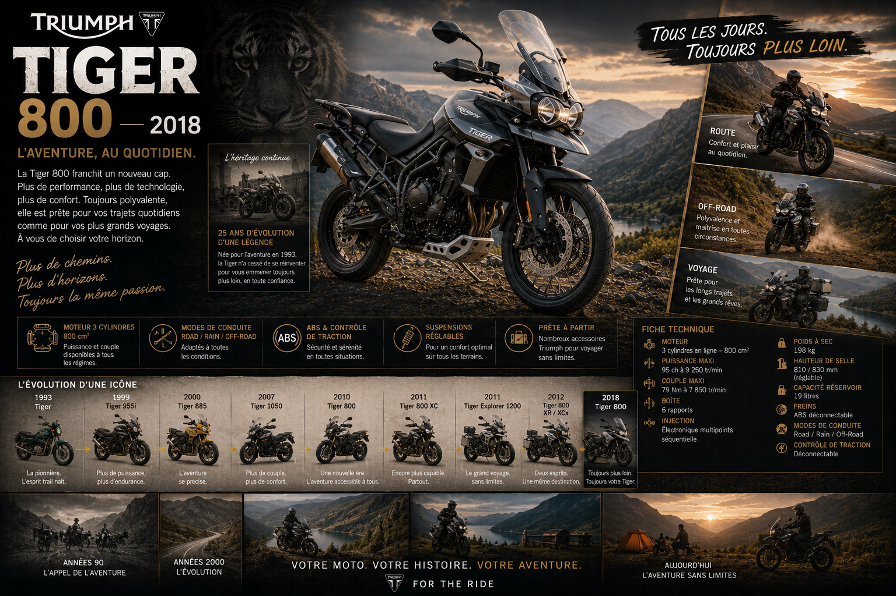
En 2018, le Tiger 800 reçoit sa mise à jour la plus complète depuis son
lancement en 2010. Cette refonte touche pratiquement tous les aspects de la machine et
élève le modèle à un niveau de sophistication et de qualité inégalé dans sa catégorie.
Le moteur est entièrement revu pour répondre aux normes Euro 4 : nouvelles culasses,
admission repensée, injection plus fine. La puissance progresse légèrement à
95 chevaux, mais c'est surtout la plage de couple qui s'améliore —
plus disponible à bas régime, plus homogène sur toute la plage d'utilisation. Le moteur
2018 est encore plus agréable au quotidien que ses prédécesseurs.
Les suspensions entièrement réglables des versions XCx reçoivent de nouveaux réglages
de série plus précis. Un nouveau système de suspensions semi-actives Showa
est disponible en option sur les versions haut de gamme — il ajuste automatiquement
la dureté des amortisseurs en fonction de la route et du style de conduite, offrant
un confort et une tenue de route optimaux en toutes circonstances.
L'électronique fait un bond en avant considérable. L'IMU à six axes fait
son apparition, permettant l'ABS cornering et un contrôle de traction
angle-sensible. Ces technologies venues de la compétition rendent la machine bien plus
sûre dans les situations d'urgence. Le tableau de bord TFT couleur de 5 pouces
remplace les anciens cadrans, offrant une lisibilité parfaite et une quantité d'informations
considérable. La connectivité Bluetooth avec l'application Triumph My Ride est intégrée.
Le Tiger 800 2018 est élu "Meilleure Trail de Moyenne Cylindrée" par
de nombreuses publications spécialisées. C'est la confirmation définitive que Triumph
a réussi à créer une machine équilibrée, polyvalente et techniquement irréprochable
dans un segment de plus en plus compétitif.
2018 — Tiger 1200 : La Refonte du Grand Voyageur
Plus léger, plus intelligent, plus capable
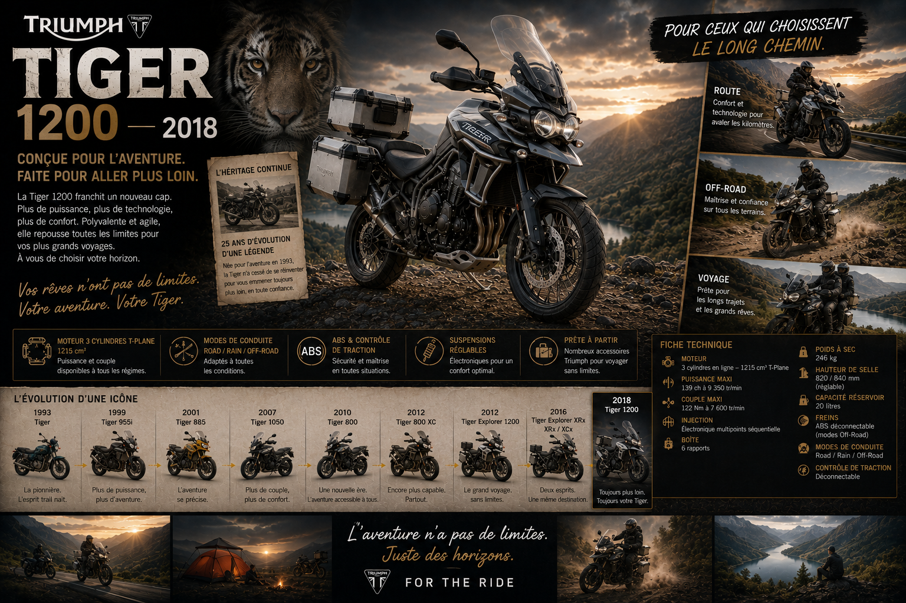
La même année, le Tiger 1200 — qui avait succédé au Tiger Explorer — reçoit lui aussi
une refonte majeure. Triumph s'attaque à l'un des reproches principaux adressés à la
génération précédente : le poids.
Grâce à un travail acharné sur chaque composant — nouveau cadre en aluminium plus léger,
nouveaux bras oscillants, nouvelles roues — le Tiger 1200 2018 perd 4 kg
par rapport à son prédécesseur. Un gain qui peut paraître modeste sur le papier, mais
qui se ressent immédiatement dans les manœuvres à basse vitesse et dans la facilité de
conduite sur terrain difficile.
Le moteur 1 215 cm³ est recartographié pour offrir une livraison de puissance encore
plus progressive et plus agréable. La puissance reste à 141 chevaux
mais le couple est retravaillé pour être encore plus disponible à bas régime — précieux
quand on roule chargé sur une piste de montagne.
L'électronique est au niveau des meilleures machines du marché. L'IMU six axes gère
l'ABS cornering, le contrôle de traction angle-sensible, l'anti-wheelie. Les
suspensions semi-actives Showa sont disponibles en option avec cinq
modes de réglage automatique. Un mode Off-Road spécifique désactive
l'ABS arrière et assouplit les interventions électroniques pour permettre une conduite
plus engagée sur les terrains non goudronnés.
Plusieurs variantes sont proposées : le Tiger 1200 XR orienté route,
le Tiger 1200 XRx et XRt avec des niveaux d'équipement
croissants, et le Tiger 1200 XCA — le haut de gamme absolu, avec les
suspensions semi-actives, les roues à rayons, et un équipement complet qui rivalise
avec les machines les plus luxueuses du segment.
2020 — Tiger 900 : La Nouvelle Référence
Le remplacement parfait du 800, plus léger et plus fort
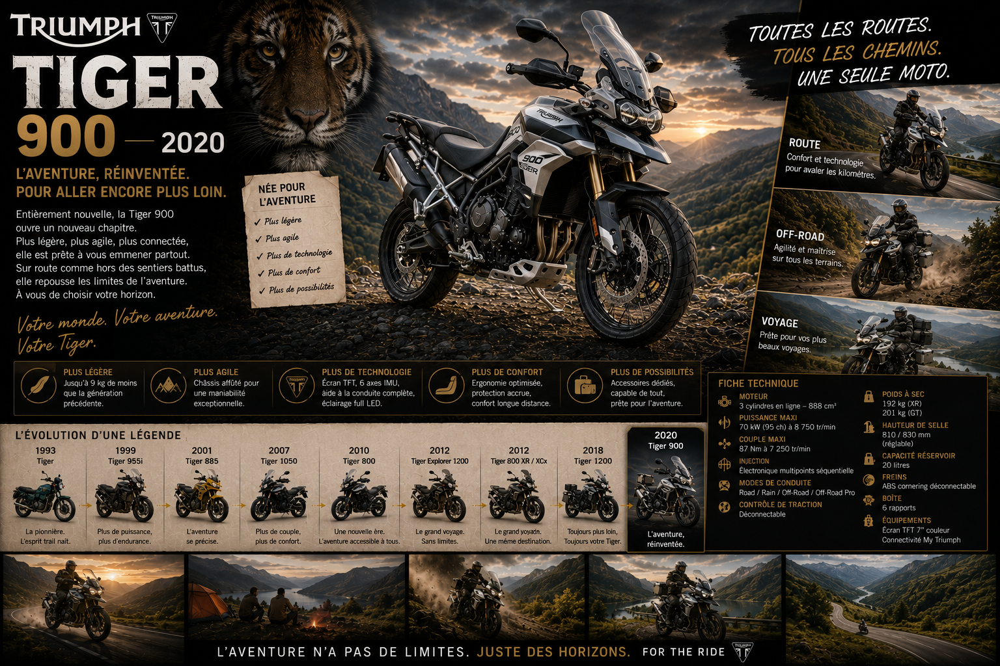
En 2020, Triumph opère une transition majeure dans sa gamme de moyenne
cylindrée. Le Tiger 800, après dix ans de bons et loyaux services, cède sa place à un
successeur entièrement nouveau : le Tiger 900. Et ce successeur est
digne de l'héritage qu'il reprend — meilleur en tout point, sans exception.
Le moteur est entièrement nouveau. Ce trois cylindres de 888 cm³ est
doté d'une particularité technique remarquable et unique dans le monde de la moto :
une allumage déséquilibré. Les intervalles entre les allumages des trois
cylindres ne sont pas réguliers — deux cylindres s'allument presque simultanément,
puis il y a une pause avant le troisième. Ce principe, appelé "T-plane" ou
"firing order irrégulier", produit une sonorité et des sensations qui évoquent
davantage un bicylindre à gros caractère qu'un trois cylindres classique.
Le résultat est extraordinaire. Le Tiger 900 parle une langue mécanique que ses
prédécesseurs ne parlaient pas. Il est plus grondant, plus rugueux, plus vivant à
bas et mi-régime. Son caractère est immédiatement addictif. La puissance est de
94 chevaux — légèrement moins que le 800 de 2018, mais le couple
est bien plus disponible à bas régime, ce qui améliore considérablement les sensations
en usage réel.
Le cadre est également entièrement nouveau et 18 kg plus léger que
celui du Tiger 800. Ce gain de poids colossal transforme littéralement la machine.
Le Tiger 900 est vif, léger, facile à manier aussi bien sur route sinueuse qu'à
vitesse réduite sur terrain difficile. Les pilotes qui passent du 800 au 900 sont
unanimes : la différence est frappante dès les premières minutes.
La gamme Tiger 900 se structure en deux familles claires. La famille GT
(Grand Tourisme) avec le Tiger 900 GT, le GT Pro
et le GT Low (selle basse pour les pilotes de petite stature) — ces
versions privilégient le confort et les performances routières. La famille
Rally avec le Tiger 900 Rally, le Rally Pro
et le Rally Explorer — ces versions sont équipées pour l'aventure sérieuse :
jante avant 21 pouces, suspensions à grand débattement, protections renforcées, pneus mixtes.
L'électronique est à la pointe. L'IMU six axes est de série sur toutes les versions.
L'ABS cornering, le contrôle de traction angle-sensible, l'anti-wheelie, les modes de
conduite Road, Rain, Sport, Off-Road et un mode Rider personnalisable — tout est là.
L'écran TFT couleur de 7 pouces est le plus grand et le plus moderne
jamais installé sur un Tiger. La navigation GPS est intégrée. La connectivité Bluetooth
avec l'application Triumph My Ride est complète.
Le Tiger 900 est élu "Moto de l'Année 2020" dans la catégorie adventure
par de nombreuses publications spécialisées en Europe et dans le monde. C'est une
consécration bien méritée pour ce qui est objectivement l'une des meilleures trails
de moyenne cylindrée jamais construites.
2022 — Tiger 1200 : Le Sommet de la Montagne
La machine la plus ambitieuse de l'histoire du modèle
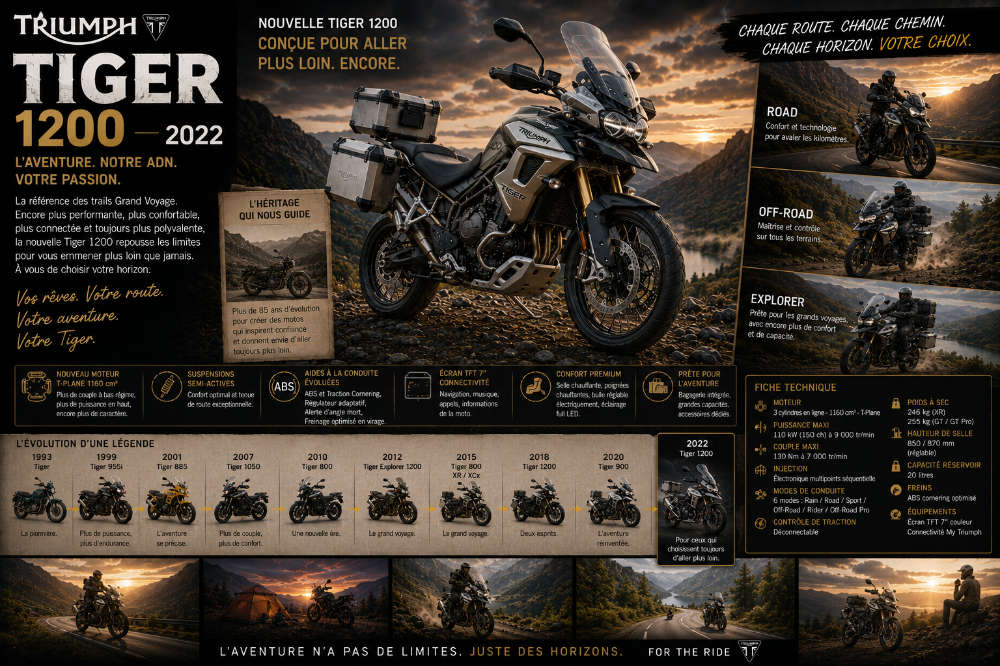
En 2022, Triumph présente la version la plus ambitieuse, la plus aboutie,
la plus spectaculaire de toute l'histoire du Tiger : le Tiger 1200 de
nouvelle génération. C'est une machine qui redéfinit ce que peut être une grande trail
— en termes de performances, de technologie, de polyvalence et de plaisir de conduite.
Le moteur est entièrement nouveau. Ce trois cylindres de 1 160 cm³
— le même bloc que celui de la Speed Triple 1200 RS, légèrement recaractographié pour
favoriser la disponibilité du couple à bas régime — développe 150 chevaux
et un couple de 130 Nm. Ces chiffres en font le Tiger le plus puissant
de toute l'histoire de la gamme, et l'un des moteurs les plus puissants jamais montés
sur une trail de série.
Mais ce qui stupéfie encore plus que la puissance brute, c'est le gain de poids.
Grâce à un travail titanesque sur chaque composant du châssis et de la carrosserie,
le nouveau Tiger 1200 est 25 kg plus léger que son prédécesseur.
Une réduction de poids de cette ampleur sur une grande trail est un exploit d'ingénierie
remarquable. La version GT de base descend à 240 kg pleins faits —
un poids remarquablement contenu pour une machine de cette cylindrée et de cet équipement.
La technologie embarquée est celle des machines les plus sophistiquées du monde. La
suspension semi-active Showa EERA (Electronically Equipped Ride Adjustment)
ajuste automatiquement la dureté des amortisseurs 1 000 fois par seconde
en fonction des données de l'IMU, de la vitesse, et du mode de conduite sélectionné.
Le résultat est un confort et une précision que les mots peinent à décrire — la machine
semble deviner les inégalités de la route avant même de les rencontrer.
L'écran TFT de 7 pouces est l'un des plus grands et des plus beaux du
marché. La navigation GPS intégrée, la connectivité Bluetooth, l'appairage avec un casque
Bluetooth, le contrôle de l'intercom depuis le tableau de bord — tout est pensé pour
le voyageur moderne qui veut rester connecté sans sacrifier l'aventure.
La gamme 2022 comprend cinq variantes : GT, GT Pro,
GT Explorer, Rally Pro et Rally Explorer.
Les versions Explorer sont les plus équipées — valises latérales de grande capacité,
top-case optionnel, protection moteur renforcée, réservoir agrandi pour une autonomie
maximale. La version Rally Explorer avec ses roues à rayons de 21 pouces à l'avant et
sa suspension Showa semi-active est l'expression la plus extrême de la philosophie
Tiger — une machine capable de traverser un continent sans faillir.
La presse mondiale est dithyrambique. Le Tiger 1200 2022 rafle les titres de
"Moto de l'Année" et de "Meilleure Grande Trail"
dans de nombreux pays. Des journalistes habitués à rouler sur les machines les plus
exclusives du monde disent ne jamais avoir piloté quelque chose d'aussi complet,
d'aussi équilibré, d'aussi plaisant dans cette catégorie.
Tiger Sport — La Branche Routière de la Famille
Quand le Tiger choisit la route sans renoncer à l'aventure
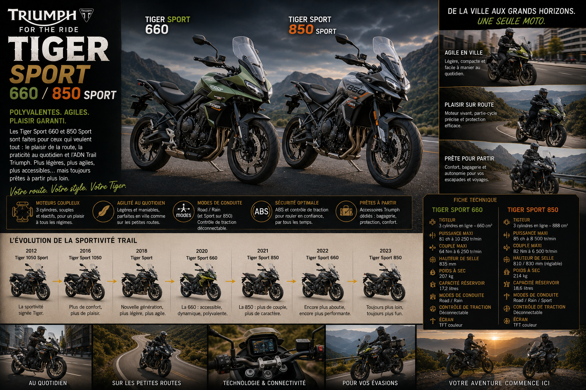
Parallèlement aux modèles aventure, Triumph développe une branche Tiger Sport
qui pousse la polyvalence dans une direction différente : moins orientée tout-terrain,
plus taillée pour les grandes routes, les cols de montagne et les trajets quotidiens
en ville. Ces machines sont le trait d'union parfait entre la trail et la routière sportive.
Le Tiger Sport 660, lancé en 2022, est une révélation.
Son moteur trois cylindres de 660 cm³, développant 81 chevaux,
offre un caractère enthousiasmant dans un package léger et accessible. Sa ligne sportive
avec son demi-carénage intégré le distingue clairement des Tiger aventure. Il est la
porte d'entrée idéale dans la famille Tiger pour les pilotes qui veulent une moto
polyvalente et plaisante sans la complexité et le poids des grandes trails.
Le Tiger Sport 850, lancé en 2021, vient se placer
entre le 660 et le 900. Son trois cylindres de 765 cm³ — le même
que la Street Triple et le moteur de Moto2 — développe 84 chevaux
avec un caractère sportif et une disponibilité du couple appréciables. C'est une moto
pour ceux qui veulent l'ADN Tiger dans un format plus pratique et plus accessible
que les grandes trails.
L'ADN Tiger — Ce Qui Fait le Baroudeur
Quatre-vingt-dix ans de valeurs inchangées
Depuis les Tiger 70, 80 et 90 des années 1930 jusqu'au Tiger 1200 Rally Explorer de 2022,
le modèle a connu des transformations radicales dans sa technologie, sa conception et
ses performances. Mais certaines valeurs fondamentales n'ont jamais changé — et c'est
ces constantes qui définissent l'identité profonde du Tiger.
La polyvalence sans compromis. Un Tiger n'est jamais une moto spécialisée.
Il ne fait pas une chose mieux que tout le monde et le reste mal. Il fait tout, et il
le fait bien. C'est sa raison d'être depuis l'origine, et c'est ce qui le distingue
fondamentalement d'une sportive ou d'un cruiser.
La capacité à aller partout. Chaque génération de Tiger a toujours été
conçue pour que son propriétaire puisse décider au dernier moment de quitter la route
goudronnée sans angoisse. La garde au sol généreuse, les suspensions à débattement
confortable, les protections robustes — ces éléments font partie de l'ADN Tiger depuis
toujours.
Le trois cylindres comme cœur. Toutes les Tiger modernes partagent
cette architecture moteur unique. Qu'il s'agisse du 800, du 900, du 1050 ou du 1200,
le trois cylindres Triumph confère à chaque Tiger une sonorité et un caractère qui le
distinguent immédiatement de ses concurrents. Ce moteur est l'âme du Tiger — expressif,
généreux, communicatif.
La fiabilité comme promesse absolue. Un Tiger embarque son propriétaire
dans des aventures parfois lointaines et exigeantes. Cette confiance n'est possible que
parce que la machine ne tombe pas en panne, n'abandonne pas au milieu de nulle part,
résiste aux mauvais traitements que l'aventure impose inévitablement. La réputation de
fiabilité du Tiger, construite sur des décennies de voyages réels dans des conditions
réelles, est l'un de ses atouts les plus précieux.
Le Tiger et les Voyageurs du Monde Entier
Les aventures qui ont forgé la légende
La légende du Tiger ne se construit pas dans les salons de l'automobile ni dans les
campagnes publicitaires. Elle se construit sur les routes du monde — et parfois, sur
l'absence de routes. Ce sont les récits des propriétaires qui ont emmené leur Tiger
au bout du monde qui forment le vrai patrimoine de ce modèle.
Des Tiger ont traversé le continent africain de bout en bout, de Tanger au Cap de
Bonne-Espérance, dans la boue rouge de la saison des pluies comme dans la poussière
blanche du désert. Des Tiger ont roulé sur la piste de la mort en Bolivie, ont descendu
les Andes, ont traversé la jungle amazonienne sur des pistes qui n'en méritent pas
vraiment le nom.
Des Tiger ont fait le tour du monde — en solitaire ou en groupe, en quelques mois ou
en plusieurs années. Ils ont traversé la Russie de Moscou à Vladivostok, ont roulé
en Mongolie et en Sibérie, ont traversé l'Iran et l'Inde, ont atteint le Tibet et le
Népal. Partout, la même conclusion : le Tiger se comporte bien, il ne lâche pas,
il arrive.
Cette culture du voyage longue distance autour du Tiger a généré une communauté mondiale
de passionnés qui partagent leurs récits, leurs itinéraires, leurs conseils et leurs
expériences. Les forums dédiés au Tiger comptent des centaines de milliers de membres.
Les rallyes Tiger rassemblent chaque année des milliers de participants. C'est une famille,
au sens le plus noble et le plus généreux du terme.
Épilogue — Le Tiger, Pour Toujours en Mouvement
Depuis 1936, le Tiger avance. Il évolue, il se perfectionne, il intègre les meilleures
technologies disponibles — mais il avance, toujours, vers l'horizon suivant. C'est peut-être
la définition la plus juste de ce modèle : une machine en perpétuel mouvement, qui ne se
satisfait jamais de là où elle est, qui regarde toujours vers ce qui se trouve au-delà
du prochain col.
Le Tiger a survécu à la guerre, à la faillite de Meriden, à la révolution technologique
imposée par les constructeurs japonais, à la montée en puissance de la concurrence
allemande. Il a traversé tout cela en restant lui-même — robuste, aventurier, polyvalent,
fidèle à sa mission fondamentale depuis l'origine.
Et aujourd'hui, avec le Tiger 900 et le Tiger 1200 dans leur forme la plus aboutie,
Triumph propose deux des meilleures motos d'aventure jamais construites par qui que ce soit.
Des machines qui donnent confiance pour partir n'importe où, des machines qui font sourire
aussi bien sur un col alpin que sur une nationale sous la pluie, des machines qui réveillent
chaque matin l'envie de repartir.
Parce qu'au fond, c'est tout ce qu'on demande à un Tiger. Pas d'être parfait sur un circuit,
pas d'être le plus rapide sur autoroute, pas d'être le plus économique en ville. Juste
d'être là, prêt, quand l'envie de partir prend le dessus sur le reste.
Et ça, le Tiger le fait depuis quatre-vingt-dix ans. Sans jamais faiblir.
For the Ride. For the Adventure. For the World.